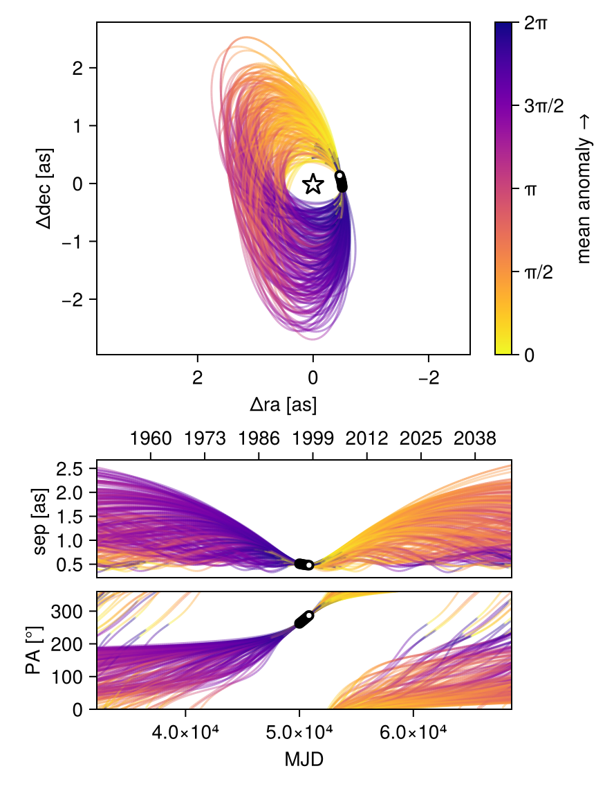
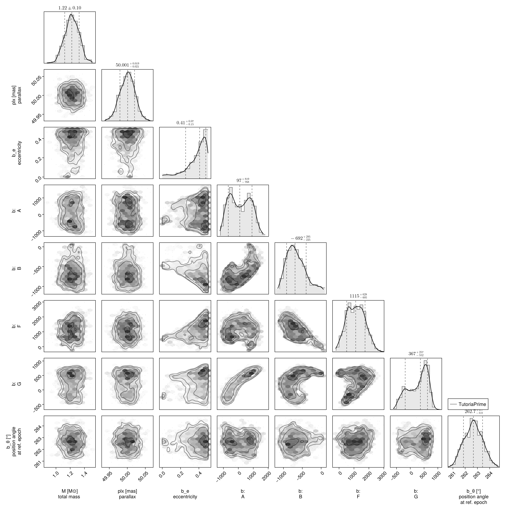
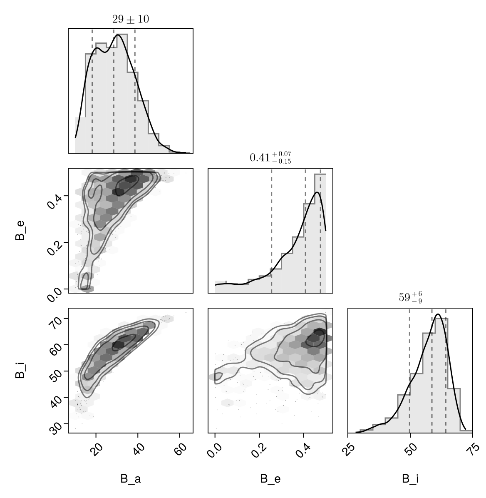

Fit with a Thiele-Innes Basis
This example shows how to fit relative astrometry using a Thiele-Innes orbital basis instead of the traditional Campbell basis used in other tutorials. The Thiele-Innes basis is more suitable then Campbell for fitting low-eccentricity orbits, because it does not have the issues where ω, Ω, and tp become degenerate as eccentricity and/or inclination fall to zero.
At the end, we will convert our results back into the Campbell basis to compare.
using Octofitter
using CairoMakie
using PairPlots
using Distributions
astrom_like = PlanetRelAstromLikelihood(
(epoch = 50000, ra = -505.7637580573554, dec = -66.92982418533026, σ_ra = 10, σ_dec = 10, cor=0),
(epoch = 50120, ra = -502.570356287689, dec = -37.47217527025044, σ_ra = 10, σ_dec = 10, cor=0),
(epoch = 50240, ra = -498.2089148883798, dec = -7.927548139010479, σ_ra = 10, σ_dec = 10, cor=0),
(epoch = 50360, ra = -492.67768482682357, dec = 21.63557115669823, σ_ra = 10, σ_dec = 10, cor=0),
(epoch = 50480, ra = -485.9770335870402, dec = 51.147204404903704, σ_ra = 10, σ_dec = 10, cor=0),
(epoch = 50600, ra = -478.1095526888573, dec = 80.53589069730698, σ_ra = 10, σ_dec = 10, cor=0),
(epoch = 50720, ra = -469.0801731788123, dec = 109.72870493064629, σ_ra = 10, σ_dec = 10, cor=0),
(epoch = 50840, ra = -458.89628893460525, dec = 138.65128697876773, σ_ra = 10, σ_dec = 10, cor=0),
)
@planet b ThieleInnesOrbit begin
e ~ Uniform(0.0, 0.5)
A ~ Normal(0, 10000) # milliarcseconds
B ~ Normal(0, 10000) # milliarcseconds
F ~ Normal(0, 10000) # milliarcseconds
G ~ Normal(0, 10000) # milliarcseconds
θ ~ UniformCircular()
tp = θ_at_epoch_to_tperi(system,b,50000.0) # reference epoch for θ. Choose an MJD date near your data.
end astrom_like
@system TutoriaPrime begin
M ~ truncated(Normal(1.2, 0.1), lower=0.1)
plx ~ truncated(Normal(50.0, 0.02), lower=0.1)
end b
model = Octofitter.LogDensityModel(TutoriaPrime)LogDensityModel for System TutoriaPrime of dimension 9 and 9 epochs with fields .ℓπcallback and .∇ℓπcallback
We now sample from the model as usual:
using Random
Random.seed!(0)
results = octofit(model)Chains MCMC chain (1000×24×1 Array{Float64, 3}):
Iterations = 1:1:1000
Number of chains = 1
Samples per chain = 1000
Wall duration = 4.03 seconds
Compute duration = 4.03 seconds
parameters = M, plx, b_e, b_A, b_B, b_F, b_G, b_θy, b_θx, b_θ, b_tp
internals = n_steps, is_accept, acceptance_rate, hamiltonian_energy, hamiltonian_energy_error, max_hamiltonian_energy_error, tree_depth, numerical_error, step_size, nom_step_size, is_adapt, loglike, logpost, tree_depth, numerical_error
Summary Statistics
parameters mean std mcse ess_bulk ess_tail ⋯
Symbol Float64 Float64 Float64 Float64 Float64 Flo ⋯
M 1.2236 0.0997 0.0039 655.8265 665.1602 1. ⋯
plx 50.0002 0.0203 0.0007 906.7480 515.2445 1. ⋯
b_e 0.3683 0.1222 0.0093 264.1704 90.6205 1. ⋯
b_A 111.9862 700.5707 80.4794 81.1440 272.5988 1. ⋯
b_B -657.9868 264.3428 29.7004 90.4280 77.2356 1. ⋯
b_F 1124.7875 592.5261 50.8317 128.5109 82.8496 1. ⋯
b_G 267.7639 353.2665 41.9151 81.6820 218.9283 1. ⋯
b_θy -0.1283 0.0184 0.0007 717.3606 667.3749 1. ⋯
b_θx -0.9972 0.1001 0.0034 890.8429 711.7606 0. ⋯
b_θ -1.6987 0.0129 0.0005 603.7080 517.4571 1. ⋯
b_tp 19027.3519 32143.8609 2576.9320 214.6048 430.7922 0. ⋯
2 columns omitted
Quantiles
parameters 2.5% 25.0% 50.0% 75.0% 97.5% ⋯
Symbol Float64 Float64 Float64 Float64 Float64 ⋯
M 1.0320 1.1585 1.2223 1.2932 1.4126 ⋯
plx 49.9597 49.9862 50.0009 50.0140 50.0391 ⋯
b_e 0.0388 0.3118 0.4082 0.4616 0.4960 ⋯
b_A -1007.4488 -504.4151 97.2547 719.9841 1331.6832 ⋯
b_B -1079.6636 -854.0376 -692.4085 -497.1676 -27.9480 ⋯
b_F 53.2102 647.7759 1115.4986 1567.0000 2252.0853 ⋯
b_G -422.4943 -21.8757 367.3875 561.9431 748.6497 ⋯
b_θy -0.1665 -0.1407 -0.1272 -0.1153 -0.0956 ⋯
b_θx -1.1975 -1.0622 -0.9903 -0.9302 -0.8107 ⋯
b_θ -1.7224 -1.7077 -1.6987 -1.6896 -1.6738 ⋯
b_tp -50164.6210 -7428.7177 28032.9714 48462.2915 49793.1024 ⋯
Notice that the fit was very very fast! The Thiele-Innes orbital paramterization is easier to explore than the default Campbell in many cases.
We now display the results:
octoplot(model,results)
octocorner(model, results, small=false)
Conversion back to Campbell Elements
To convert our chain into the more familiar Campbell parameterization, we have to do a few steps. We start by turning the chain table into a an array of orbit objects, and then convert their type:
orbits_ti = Octofitter.construct_elements(results, :b, :) # colon means all rows1000-element Vector{ThieleInnesOrbit{Float64}}:
ThieleInnesOrbit{Float64}(0.05669665730652059, 49781.90238207948, 1.2784941757934336, 49.97640971538151, -127.88881061211366, -550.3177405588539, 752.0282157006284, 105.80392601507154, -11.491374793163219, -5.379602450898304, 20907.230889716084, 0.10976745057979836, 1.0583991443930525)
ThieleInnesOrbit{Float64}(0.03357365554797266, 49586.559770275424, 1.2662233946597516, 49.98369243102974, -165.39715826233717, -545.824534563112, 777.9731332798159, 89.36466136726229, -12.210302536380343, -5.8169821322797155, 22176.001181546348, 0.10348725248793104, 1.0341566655904126)
ThieleInnesOrbit{Float64}(0.49519702925900483, -38715.48304866135, 1.1740693830145208, 49.97144165037502, -134.8336140988771, -997.9830376707924, 1994.6983334303884, 341.8823076325779, -35.786151449854614, -6.827699449095849, 88724.57658933978, 0.025865814430080687, 1.7210292904928113)
ThieleInnesOrbit{Float64}(0.4824783606653395, 48465.777886630014, 1.2419607663958767, 49.9730276105543, -802.3932126854625, -1072.2184799249746, 1686.2479892743788, 96.49683286174188, -28.85605078899914, -20.211668229638484, 80997.19719083875, 0.02833349193602608, 1.692504860220644)
ThieleInnesOrbit{Float64}(0.36509182531704204, 49588.93362518399, 1.162242813243559, 50.003351067447916, -253.11320111175934, -834.2897238020756, 1401.9409904672864, 219.07567783601857, -24.10101548500398, -8.921620781459934, 54967.51211567788, 0.04175072411168453, 1.4663089100074977)
ThieleInnesOrbit{Float64}(0.25764356254084797, 48786.51629630317, 1.309665434175477, 50.035335350741725, -452.84557689257207, -738.9814505743443, 1154.5609712534128, 69.6479422152598, -19.358861943029908, -11.849777019751485, 42257.38627027758, 0.05430845672207423, 1.3015850348721383)
ThieleInnesOrbit{Float64}(0.3321803293567638, 48639.679435160535, 1.3036380742450646, 49.99763510129226, -570.8933070114293, -826.5531815204558, 1091.330898988916, 12.073747980469237, -17.095172491107835, -14.812906645455241, 43345.358454063426, 0.052945309839333085, 1.4123811242667583)
ThieleInnesOrbit{Float64}(0.31758323158878865, 48093.219561691745, 1.2649112261764819, 50.01347983338619, -693.0257894355731, -843.653811119737, 1040.9963101841342, -2.5068267216873488, -16.331831421097444, -17.60818318921806, 46231.23665127368, 0.04964032112656277, 1.38951802424131)
ThieleInnesOrbit{Float64}(0.38923732988373183, -5907.781481235419, 1.1577222959240323, 50.01112046211651, 995.9184822088473, -449.7271138352483, 1175.3846709340332, 636.4203934523437, -22.166137752179708, 15.951873382886449, 58946.93632346751, 0.038932191842066984, 1.5081758413439807)
ThieleInnesOrbit{Float64}(0.4242755095507111, 2857.256275060834, 1.2027281604045568, 50.002589612097275, 934.1373970354545, -517.119268103337, 1041.7519760967057, 612.970502828368, -18.285410285792196, 14.35226551621642, 49643.97012398343, 0.046227838501148436, 1.5728584912940553)
⋮
ThieleInnesOrbit{Float64}(0.41830558532657913, -13358.197593835372, 1.155181824183435, 50.001587464422684, 490.1281390764802, -725.7227531345895, 1545.0235539562216, 534.6874267783936, -28.106840940045963, 5.254254571883464, 64766.35167092335, 0.03543403903786118, 1.5614837165394069)
ThieleInnesOrbit{Float64}(0.3260368444528138, 2791.7147344482, 1.1624701017424157, 50.00576364474448, 1039.4726091727384, -286.90282245027106, 929.749493667033, 634.5751716048727, -18.309319011737657, 17.132410391502404, 50971.45395146992, 0.04502389583848947, 1.4026835962056659)
ThieleInnesOrbit{Float64}(0.4779610504052765, 48426.14467034531, 1.2817742636877603, 50.01456178793579, -823.5144487373905, -1059.962153265319, 1781.9694461964189, 92.23147659586407, -30.98864894782776, -20.192273035725883, 84680.26725135098, 0.027101159549195106, 1.6825967313887398)
ThieleInnesOrbit{Float64}(0.04404453699922155, 49651.27989956645, 1.283057454619431, 49.980033327680914, -158.2325829544868, -520.9669843851341, 783.1004282811332, -12.493122835160168, -11.933016204568895, -3.938562369147339, 20943.16062467104, 0.1095791353834107, 1.0450586948639173)
ThieleInnesOrbit{Float64}(0.04023865663614142, 49409.5477604231, 1.2813515796631585, 49.98014657994294, -219.13442774464517, -526.6781480482001, 748.0184152381895, -36.17875889348248, -11.038425139734855, -5.2535441466731125, 20415.602922234033, 0.11241075966206217, 1.041081831638273)
ThieleInnesOrbit{Float64}(0.01594067042210964, 49195.29183470444, 1.3583609123210574, 50.02141537184305, -275.420178317358, -515.8646468037547, 643.2929874472325, -82.85711358566488, -8.468337386121702, -6.344467601971294, 17188.587184165863, 0.13351495436235958, 1.0160697728153718)
ThieleInnesOrbit{Float64}(0.3693360741898515, 48236.49775920011, 1.2597379097997874, 49.98806943510169, -758.4808394718323, -784.5103114797779, 1245.3580595324631, -145.83536585307834, -20.425586527273865, -16.26523077186282, 53194.133658773266, 0.04314260380982523, 1.4735199827250778)
ThieleInnesOrbit{Float64}(0.45458857671013775, 48241.34899419212, 1.1771897588453237, 50.022468742513716, -868.2773258981587, -920.0604709568145, 1104.9788329773455, -200.14130417750232, -15.790983629394846, -19.62106131551771, 54806.49892888066, 0.04187338141094091, 1.6330819227335345)
ThieleInnesOrbit{Float64}(0.4780542689496769, 49820.369946779254, 1.2515103932699585, 50.001442784686105, -228.31266633584346, -988.7568733406923, 1815.8629228891189, 324.55765964993674, -32.13879494419802, -9.153431909130534, 76512.71933560044, 0.02999414284808381, 1.6828000456212164)Here is one of those entries:
display(orbits_ti[1])We can now make a table of results (and visualize them in a corner plot) by querying properties of these objects:
table = (;
B_a = semimajoraxis.(orbits_ti),
B_e = eccentricity.(orbits_ti),
B_i = rad2deg.(inclination.(orbits_ti)),
)
pairplot(table)
We can also convert the orbit objects into Campbell parameters:
orbits_campbell = Visual{KepOrbit}.(orbits_ti)
orbits_campbell[1]KepOrbit{Float64}
─────────────────────────
a [au ] = 16.1
e = 0.056696657
i [° ] = 51.9
ω [° ] = 245.0
Ω [° ] = 24.1
tp [day] = 49800.0
M [M⊙ ] = 1.28
period [yrs ] : 57.2
mean motion [°/yr] : 6.29
──────────────────────────
plx [mas] = 50.0
distance [pc ] : 20.0
──────────────────────────